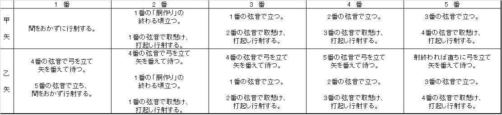
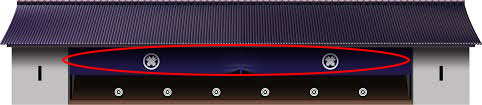
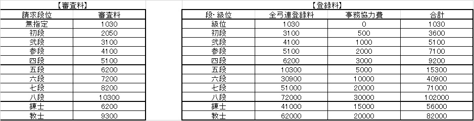

段審査
さて、弓道を初めて約半年から一年くらいで指導者に審査を受けるように勧められます。 弓道にも柔道などのように段位が存在し、審査に合格することで得られます。 段位があれば一人で道場を利用できたり履歴書に書くことも出来ます。
審査の内容と種類
弓道の審査は筆記と実技の試験があります。実技は文字通り弓を引いて技術が一定の水準に
達しているかを見られます。
筆記は射法八節の内、選ばれた一つについての説明。もしくは弓道を通して学んだことなど
の精神的なものの説明です。また、審査には二種類の方式があります。
-
無指定
実技：あり。矢は二本射る。
筆記：県によって異なりますが、基本的に射法八節についての簡単な説明 と弓道を通して何を学んだかなどを説明します。
-
初段審査
実技：あり。矢は二本射る。
筆記：射法八節についての説明などの謝儀問題、もしくは弓道を始めてよかったことなどの一般問題のどちらかを選び論文を書きます。
始めて審査を受ける人は無指定を受けることをお勧めします。初段審査の場合、不合格だと
何ももらえませんが、無指定の場合は成績によって五級から初段までの級位、段位をもらう
ことができます。
審査を受けるたびに受験料を払うのでやはりなにかしらの成果は欲しいところです。それと、
私は神奈川県で無指定を受けたのですが、神奈川の無指定は当日に筆記試験が無く、あらか
じめ論文を書いて当日に提出という形式です。
そのため当日は実技のみに集中できたため初審査で初段を取ることができました。受ける都道
府県によってその辺りは異なると思うので審査を受ける際はしっかりと要項を読みましょう。
実技：あり。矢は二本射る。
筆記：県によって異なりますが、基本的に射法八節についての簡単な説明 と弓道を通して何を学んだかなどを説明します。
実技：あり。矢は二本射る。
筆記：射法八節についての説明などの謝儀問題、もしくは弓道を始めてよかったことなどの一般問題のどちらかを選び論文を書きます。
審査のポイントと注意点
さて、ここからは合格するために押さえておきたいポイントを紹介していきたいと思います。
まずはこちらの画像を見て五人立ちの行射の要領を覚えてください。

これができないと問答無用で不合格なので気を付けて下さい（笑）。また、押さえておきたい
ポイントは以下の通りです。
1. 背筋を伸ばして姿勢をよく見せる！
2. 目線はきょろきょろさせず常に一点を見る！
3. ミスしてもおどおどしない！常に堂々としている！
まず、1はどんな場面でも当たり前ですね。猫背だったりすると覇気がなくやる気がないとみなさ
れてしまいます。実技試験はだいたい6分から7分くらいなので練習の時は常に姿勢に気を付けて
いましょう。
2について、絶対に目線は一点を見ていてください。泳いでいた場合、下手したらそれだけで不合
格の可能性もあります。
審査の形はこちらの通りですが、
これだけ見ると後ろの人は見えないだろうし、手を抜いても大丈夫だろうと考えたあなた！
その考えはハチミツよりも甘いです！審査員の先生方にはその程度の浅知恵は通用しません。
むしろ後ろで見にくいからこそ注意深く見てきます。審査を受ける際はどの位置でも常に集中して
臨みましょう。
最後に3ですが、緊張によってミスすることは十分にあります。例えば、画像の的の上に垂れ幕の
ようなものがあると思いますが、これに矢が当たってしまうと不合格または級になる確率が高いです。

また、矢が的のある位置に届かなかったり、届いても羽の部分が地面に触れてたりしても同様です。
もしくは、動作を途中で忘れてしまったり違うことをやってしまうかもしれません。
しかし、例え失敗してもオドオドせずに常にすまし顔で毅然とした態度でその後の動作を続けてください。
そうすれば合格の可能性は十分にあります。
私自身、初めて受けた無指定の審査で矢が二本の内一本が的まで届いたのですが羽が地面に着いてしまいました。
しかし、初段で合格できました。
その後の二段審査の時も同じことをしてしまいましたが合格できました。自分で言うのもなんですが、射法八節を
含む一連の動作は完璧に出来たと思っていたので矢が地面に着いてしまった時も何食わぬ顔で動作を続けました。
皆さんも審査を受ける際はこれらのポイントに注意して臨みましょう。
登録料
それと、審査を受ける際に忘れてはいけないのは登録料です。これを支払わないと合格しても認定
されません。
審査終わりにお金を持ってきておらず、友達に借りたり家族に持ってきてもらったりして
いる人をたまに見かけました（笑）。登録料は以下の画像の通りです。
特に無指定の場合は一級か初段か分からないので初段に合格するつもりでお金は持って行きましょう。

出典・脚注
参考文献
・『弓道教本 1巻 射法篇』http://www.sambu.jp/SHOP/K-001.html
参考資料
・『公益財団法人 全日本弓道連盟』http://kyudo.jp/contents/code/ab2 (2015年11月アクセス)
・『神奈川県弓道連盟ホームページ』http://www.kyudo-kanagawa.jp/ (2016年7月アクセス)
画像引用
・Google画像検索『弓道 射場』(全てライセンスフリーのものを使用しています。)
動画URL
・Kyudo 弓道 exam (shinsa) 1st dan (shodan) 初段審査 Chiba 2012 千葉県 :https://www.youtube.com/watch?v=NM5B7PTTA04